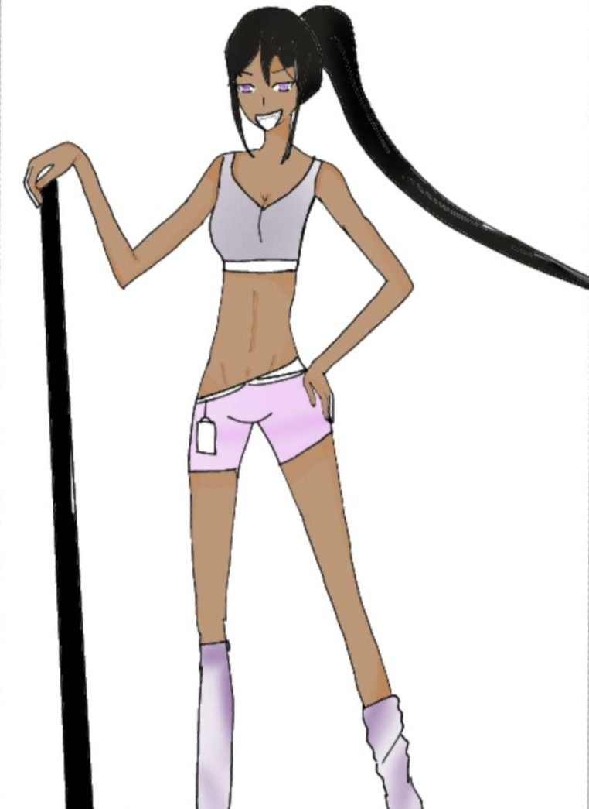

正義
Justice
四大元素：元素風--公平理性
代表神話人物：智慧女神雅典娜
正義女神秉持公心、理智、正直，維護公理和律法並解決爭議。 由於她總是理性評估和決策，難免會讓人覺得有些嚴肅或一絲不苟，但這也表示她願意付出最大的誠實。
正義卡牌同時代表無私欲的愛及以智取勝的戰爭，正面描繪了她堅毅的「責任感」。 卡牌有男女平衡之意，能視破現實的假像，在權衡輕重後，一定能做出一個最明智的選擇。
離開卡牌